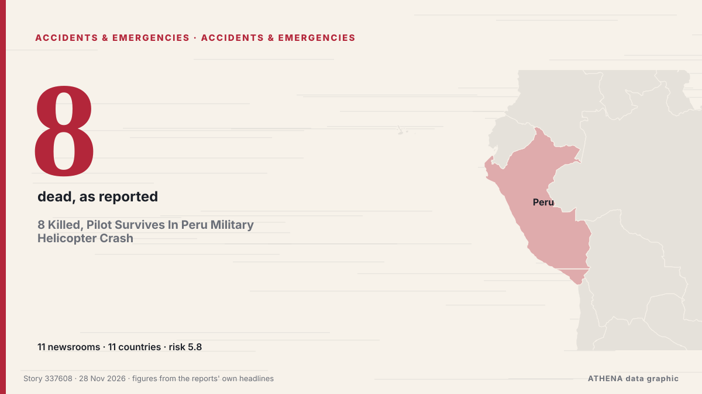

Accidents & emergencies
SponsoredPresented by  Cybernetics and Artificial Intelligence Lab Welcome to the Cybernetics and Artificial Intelligence Laboratory, established at the Department of Business Administration of the National and Kapodistrian University of Athens. The lab is headed by Professor Dimitrios Thomakos. The lab aims to do research that can be published in top venues. Our research uses tools and methods of Artificial Intelligence, and lies in the following areas: - Forecasting - Decision making - Cyber security - Finance We are always looking forward to collaborating with exceptional students!
Cybernetics and Artificial Intelligence Lab Welcome to the Cybernetics and Artificial Intelligence Laboratory, established at the Department of Business Administration of the National and Kapodistrian University of Athens. The lab is headed by Professor Dimitrios Thomakos. The lab aims to do research that can be published in top venues. Our research uses tools and methods of Artificial Intelligence, and lies in the following areas: - Forecasting - Decision making - Cyber security - Finance We are always looking forward to collaborating with exceptional students!

Accidents & emergencies8 Killed, Pilot Survives In Peru Military Helicopter Crash
The helicopter crashed while on a mission to rescue a patrol in a remote area of the valley formed by the Apurimac, Ene and Mantaro rivers, known by its Spanish acronym VRAEM. from NDTV World
Grace Tame calls out ex-Murdoch media executive who said she ‘must be looking to be raped again’
Matt Handbury, nephew of Rupert Murdoch, admits making offensive remark and says he was referencing assault survivor’s ‘strikingly attractive get-up’ Get our breaking news email, free app or daily… from The Guardian
Funding cuts force mass closures of shelters for refugee women, UN says
The UN refugee agency reports significant funding cuts have shuttered nearly half of the shelters for displaced women and girls, raising their vulnerability to abuse. from Arab News
Ukrainian man in critical condition after setting himself on fire in central Warsaw
The man received emergency medical assistance and was taken to the hospital with severe burns. from Kyiv Independent
Blackouts and floods fail to derail Sabah’s 42,808 SPM candidates
KOTA KINABALU, Nov 27 — All 42,808 candidates sitting for the Sijil Pelajaran Malaysia (SPM) examination in Sabah since... from Malay Mail
Egypt detains a driver suspected of causing Cairo tanker crash that killed 31
Egyptian authorities have detained a driver suspected of causing a fuel tanker to overturn on a major highway in Cairo. from ABC News (International)
Hisham Talaat Moustafa, Ahmed Ezz, Yassin Mansour donate EGP 30m to families of Ring Road accident victims
Egyptian businessmen and the banking sector have mobilised at least EGP 60 million (USD 1 million) in financial assistance for victims of a deadly fuel tanker fire on Cairo’s Ring Road, following an… from Egyptian Streets
Bad day for Malaysian squash players in Hong Kong
KUALA LUMPUR: Malaysia’s challenge in the Hong Kong Football Club Squash Open ended in the quarter-finals on Thursday. from New Straits Times
Iranian activist and Oscar-nominated screenwriter Mehdi Mahmoudian arrested in Tehran
CAIRO: Leading Iranian rights activist and Oscar-nominated screenwriter Mehdi Mahmoudian was arrested at his home in Tehran on Wednesday, a friend and Europe-based activist told The Associated Press… from Arab News
Mirziyoyev sends condolences to Egyptian president over Cairo fire that killed 31
Uzbekistan’s President Shavkat Mirziyoyev has sent condolences to Egyptian President Abdel Fattah el-Sisi following a fuel tanker accident near Cairo on November 25 that triggered an explosion and… from Daryo
Tinubu approves houses, N100m each for families of NAF crash victims
President Bola Tinubu says he has approved three-bedroom flats situated in Abuja to be given to the families of the 25 people who died in the Nigeria Airforce aircraft crash in Igbokoda, Ondo State. from Daily Trust
High-quality medieval armor discovered in shipwreck that sank in 1495
The ship, known as "Griffin" or "Gribshunden," was the warship of Denmark's 15th-century leader King Hans. from CBS News (World)
Man in M'sia collapses during badminton game, no one knows CPR, victim dies
A badminton player said he could only watch helplessly as he did not know how to administer first aid. from Mothership
2 workers injured in explosion, fire at Kerteh factory
The victims, a local man and a Bangladeshi national, have been taken to the Paka health clinic for further treatment. from Free Malaysia Today
One killed, five injured in BNP factional clash in Munshiganj
A man was killed and several others were injured in a clash between two factions of Bangladesh Nationalist Party (BNP) in Munshiganj over the upcoming union parishad (UP) elections and establishing… from Prothom Alo (English)
A year after Hong Kong's deadliest fire in decades, authorities are wary of memorials
The Wang Fuk Court fire was the world's deadliest residential blaze since 1980. from SBS News
Pakistan: Emergency teams search for survivors beneath collapsed building
At least one person was killed and 10 others injured when a multi-storey building under construction collapsed in Karachi, on Wednesday 25 November 2026. from Euronews English